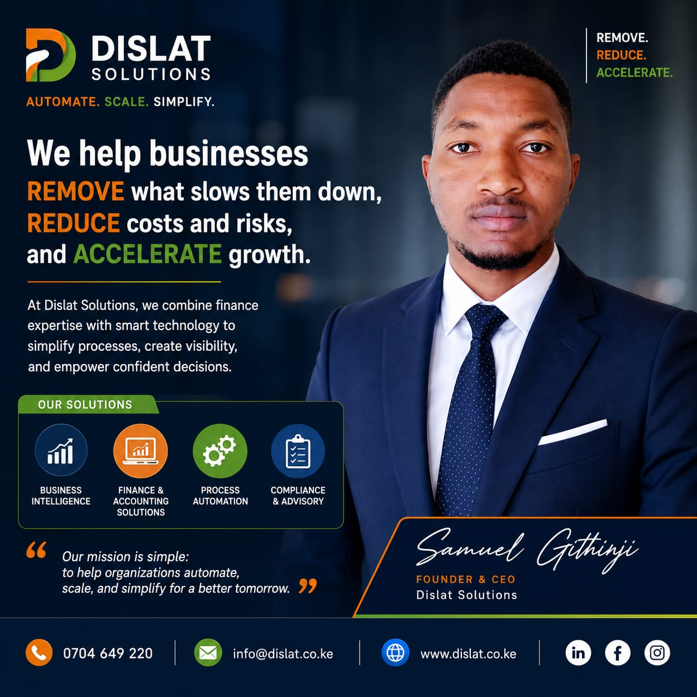

Business review
Understand what slows the team down and where visibility is missing.
Remove. Reduce. Accelerate.
A practical transformation package that combines finance expertise, process review, automation planning, and dashboard visibility into one improvement roadmap.

What is included
Understand what slows the team down and where visibility is missing.
Prioritize the systems, dashboards, workflows, and controls to implement first.
Support implementation with automation, finance structure, reporting, and training.
Use cases
Implementation
Review workflows, tools, data, finance routines, and decision bottlenecks.
Rank improvements by impact, cost, urgency, and adoption effort.
Implement dashboards, workflows, templates, or controls.
Train users, measure outcomes, and plan the next improvement cycle.